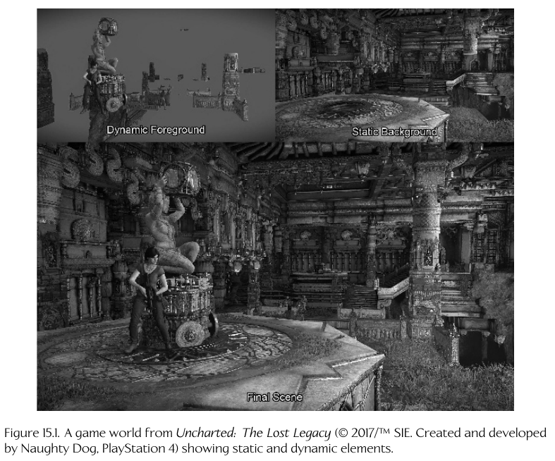
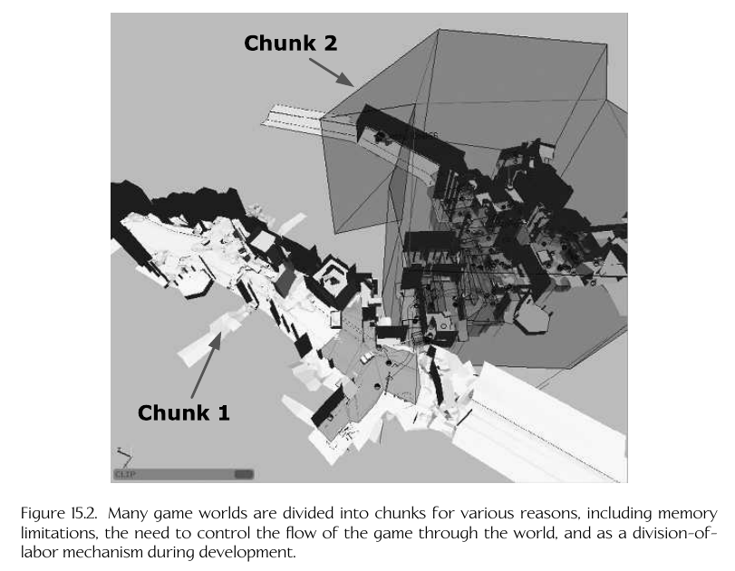
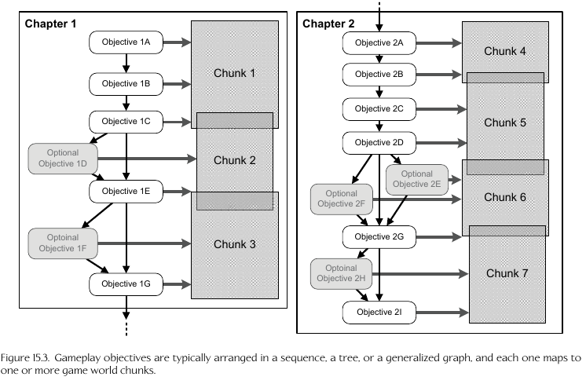

Gameplay Systems
Manage things such as:
- Interaction rules between objects
- Player objectives
- success/fail criteria
- Player abilities
- overall flow
- number and types of non-player entities
Sometimes referred to as "game mechanics", "G-factor"
Game world elements
- Static Elements:
- don't change or interact with things during gameplay
- terrain, buildings, roads, bridges
- Allows for optimization since we don't have to worry about
alot of logic for managing these
- Static geometry
- Brush geometry: a shape made up of a collection of convex
volumes, easy to make and used for prototyping
- Dynamic elements:
- Objects/elements that can change/interact with each other
- characters, vehicles, weaponry, floating power-ups
and health packs, collectible objects, particle emitters, dynamic lights
- 
World Chunks
- Split up the world into multiple sections
- Such as levels, world areas, etc.
- Helps memory usage/resources since don't have to load everything
at once
- 
- 
Game Objects
- Referred to as GO
- An object-oriented model, uses inheritance
- Can be instanced; each has a type:
- Pacman has 1 pacman instance, 5 ghost instances,
and 100 pellet instances
- The "object model" can define the C++ interface or
by a formal design language, such as the OMT object model
- Microsoft Excel has an object model which allows external
programs to control excel (API/interface)
- Tools for creation might have their own interface/language/model
different from the game engine, which is converted during the
asset conversion pipeline
- The tool-side object model is defined by the set of game object types seen by
the designers within the world editor.
- The runtime object model is the model used by the engine/language
used during runtime
Data-driven game engine
- Much of the logic/work in an object/asset is defined and
implemented at the tool-side/asset creation stage.
- The engine supports reading the tool-side logic/is
abstracted to read,parse,run what is defined within
the data itself
- This requires extra work on the engine side in terms
of implementation, however can pay off by the improved
"iteration time" from the asset developer
- Iteration time = time needed between modifying an
asset and seeing the result in the game
- Need to be careful when trying to implement this as it
can be time consuming, complex, and bug ridden; may
be easier to hard code stuff
Game world editor examples
- Radiant from Quake/Doom engines
- Hammer (prev. called Worldcraft, The Forge) from Source engine from Valve
- CRYENGINE from crytek
Game world editor features
- World chunk creation/management
- Perspective/Orthogonal world views
- Navigation, e.g. via WASD, object centering
- Object selection via raycasts or rubber-band select
- Property Grids: Show and modify object properties
- Light Objects
- Particle Emitteres
- Sound Sources
- Event Regions
- Splines: Catmull-Rom splines commonly used
- AI Nav Meshes: define areas the AI can navigate through
- Custom Data
- Save/Load in formats such as binary, JSON, XML
- Rapid Iteration/Round Trip Time: want quick time between
change and viewing the result